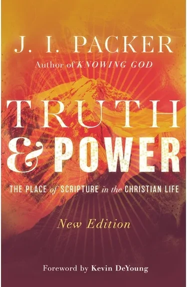
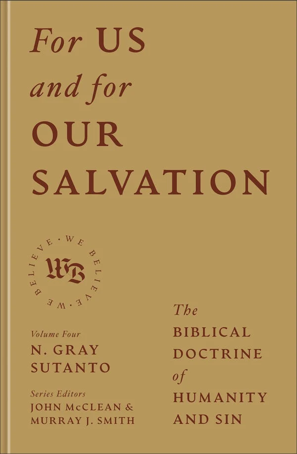
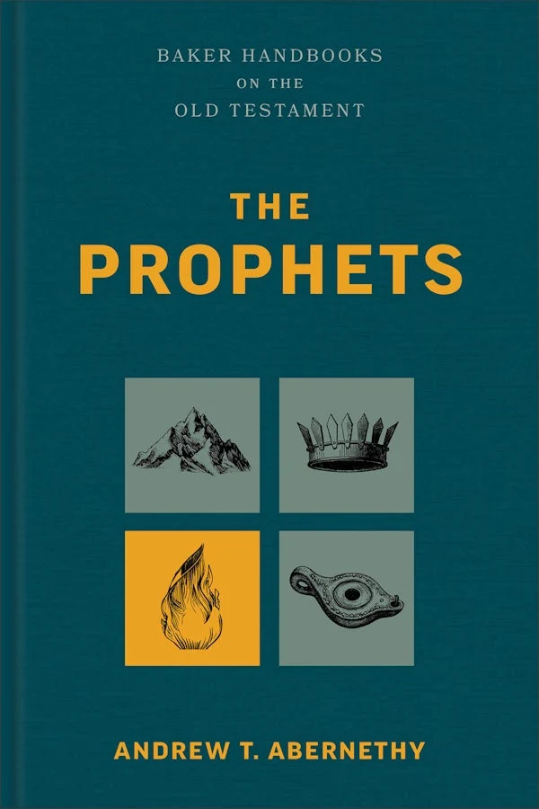
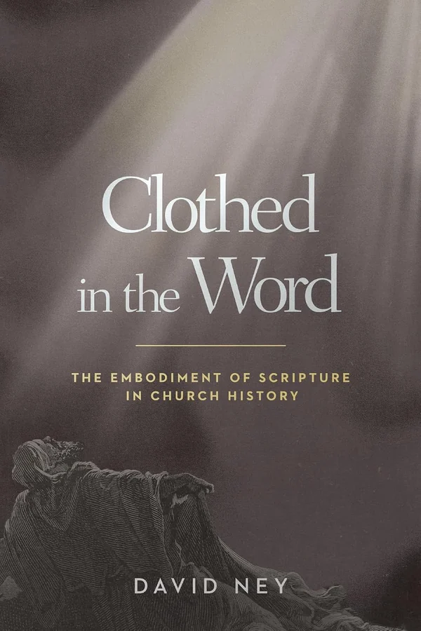
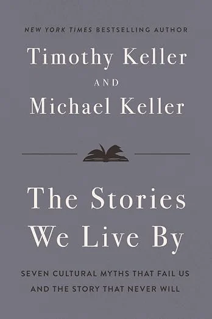

Truth and Power
J. I. Packer
Packer on the authority of Scripture, back in print. Written into a controversy that has changed shape without changing substance.
November 17, 2026IVP
New and notable theology, tracked every week — biblical studies, apologetics, ministry and preaching, church history, and the backlist worth pulling down. Chosen with care, one shelf at a time.
The newest titles on each part of the shelf, straight from the release calendar — systematics and ethics, biblical studies, church history, and books for ordinary Christian life.
Doctrine, ethics and apologetics - the load-bearing books.




Commentaries, biblical theology and the academic work behind the preaching.



Historical theology, the Puritans, the confessions, and the lives worth knowing.




Devotional, pastoral and counselling books for ordinary Christian life.



Generated from the release calendar · last built September 6, 2026.
Browse the whole shelf like you would in the shop — new releases, recent titles, and a wall of spines to run your eye across.
Every new theology book we're tracking, laid out month by month with links and covers.
Curated roundups — seasonal previews, best-of lists, and guides for pastors, students, and lay readers.
Out-of-print and hard-to-find theology — Reformed, Puritan, and patristic classics, one graded copy each.
New and notable theology, chosen with care and sent free every Friday — a few of the week’s best releases, where to buy, and a find from the used shelf. No spam; unsubscribe anytime.